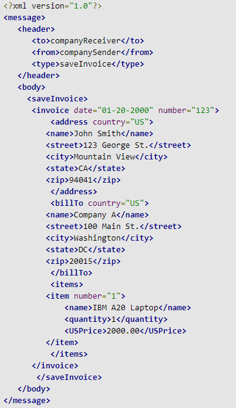
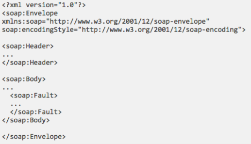

Message and flask
A quick introduction to XML
- XML: Extensible Markup Language (http://www.w3.org/XML/)
- Derived from SGML (like HTML)
- XML as a generic format for exchanging information: you can also use it for other applications besides web app
- E.g. NoSQL DB
- XML comes with a suite of standards: XML DOM, XML-Schema, XPath, XQuery, etc…
An example of XML message

A quick introduction to SOAP
- SOAP stands for Simple Object Access Protocol
- an application communication protocol
- a format for sending and receiving messages
- platform independent
- based on XML
- SOAP (http://www.w3.org/TR/soap/) is an XML format for exchanging web services messages
- Original Simple Object Access Protocol, now just SOAP
- SOAP often goes with a variety of other technologies: all the XML technologies, plus all the WS technologies (referred to as WS-*)
- SOAP provides a way to communicate between applications running on different operating systems, with different technologies and programming languages.
- A SOAP message MUST be encoded using XML
- A SOAP message MUST use the SOAP Envelope namespace
- A SOAP message MUST use the SOAP Encoding namespace (Array element and the arrayType attribute used to encode Vector and Array java objects.)
SOAP Messages

| Index | Prev | Next |